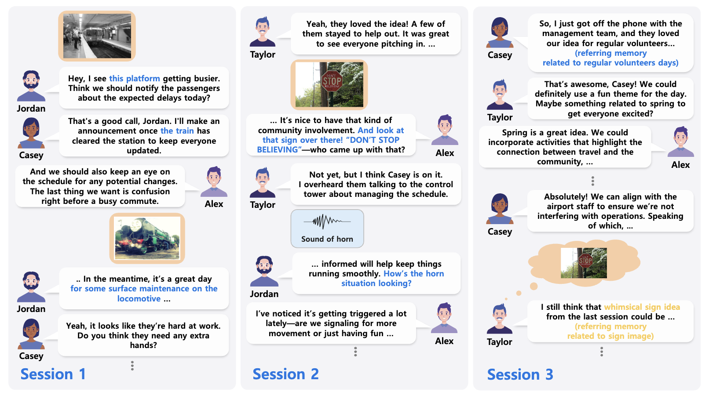
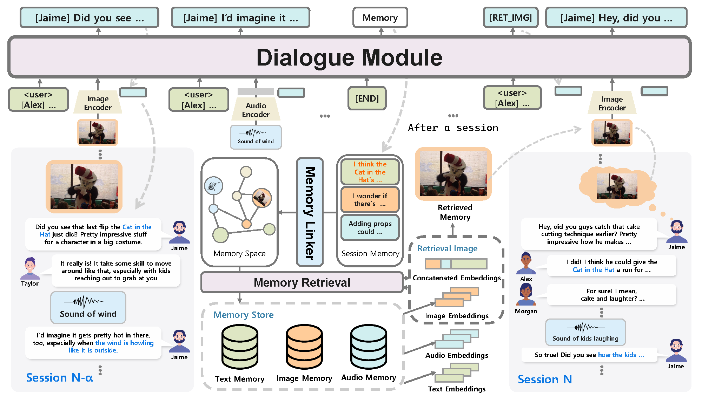
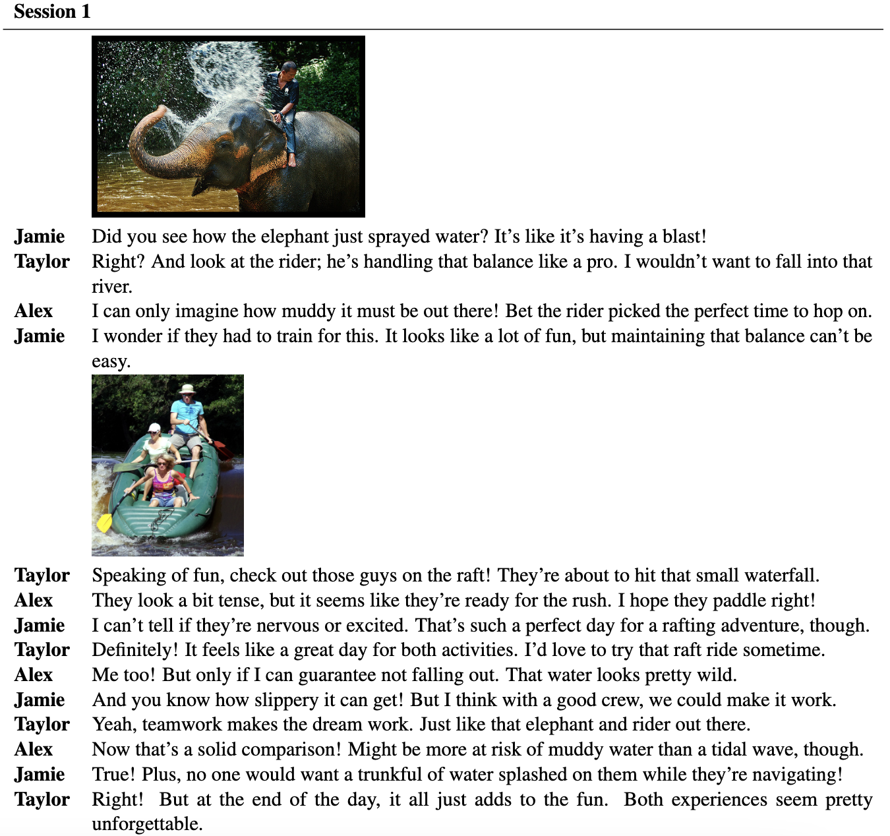
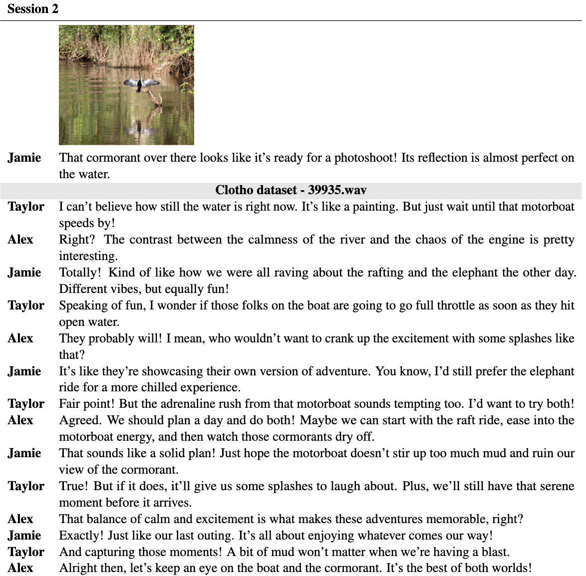
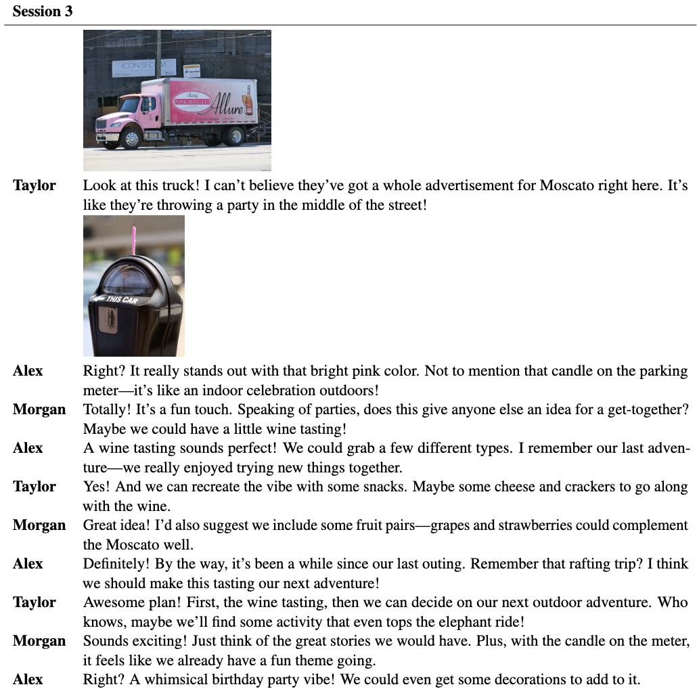
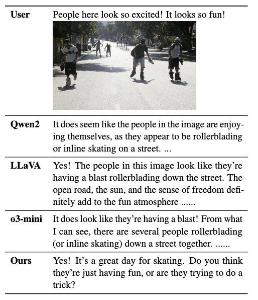
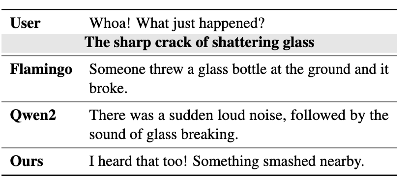

As chatbots continue to evolve toward human-like, real-world, interactions, multimodality remains an active area of research and exploration. So far, efforts to integrate multimodality into chatbots have primarily focused on image-centric tasks, such as visual dialogue and image-based instructions, placing emphasis on the "eyes" of human perception while neglecting the "ears", namely auditory aspects. Moreover, these studies often center around static interactions that focus on discussing the modality rather than naturally incorporating it into the conversation, which limits the richness of simultaneous, dynamic engagement. Furthermore, while multimodality has been explored in multi-party and multi-session conversations, task-specific constraints have hindered its seamless integration into dynamic, natural conversations. To address these challenges, this study aims to equip chatbots with "eyes and ears" capable of more immersive interactions with humans. As part of this effort, we introduce a new multimodal conversation dataset, Multimodal Multi-Session Multi-Party Conversation (M3C), and propose a novel multimodal conversation model featuring multimodal memory retrieval. Our model, trained on the M3C, demonstrates the ability to seamlessly engage in long-term conversations with multiple speakers in complex, real-world-like settings, effectively processing visual and auditory inputs to understand and respond appropriately. Human evaluations highlight the model’s strong performance in maintaining coherent and dynamic interactions, demonstrating its potential for advanced multimodal conversational agents.

| Datasets | Type | Multiple Sessions | Multiple Speakers | Image (# of Images) | Audio (# of Audios) | # of Sessions | # of Turns | ||
|---|---|---|---|---|---|---|---|---|---|
| AMI | Open-Domain | ❌ | ✔ | ❌ | ✔ | - | 279 | - | |
| VisDial | Modality-QA | ❌ | ❌ | ✔ | (120K) | ❌ | 123K | 2.4M | |
| MELD | Open-Domain | ❌ | ✔ | ✔ | - | ✔ | - | 1.4K | 13K |
| ImageChat | Modality-Centric | ❌ | ❌ | ✔ | (202K) | ❌ | 202K | 401K | |
| MMConv | Modality-Centric | ❌ | ❌ | ✔ | (114K) | ❌ | 5.1K | 39.8K | |
| PhotoChat | Open-Domain | ❌ | ❌ | ✔ | (10.9K) | ❌ | 12K | 156K | |
| MMDD | Modality-Centric | ❌ | ❌ | ✔ | (13K) | ❌ | 17K | - | |
| MMDialog | Modality-Centric | ❌ | ❌ | ✔ | (1.53M) | ❌ | 1.08M | 4.92M | |
| MPCHAT | Modality-Centric | ❌ | ❌ | ✔ | (153K) | ❌ | 15K | 42.5K | |
| Audio Dialogues | Modality-QA | ❌ | ❌ | ❌ | ✔ | - | 163K | - | |
| MiSC | Open-Domain | ✔ | ✔ | ❌ | ❌ | 51K | - | ||
| DialogCC | Open-Domain | ❌ | ❌ | ✔ | (129.8K) | ❌ | 83K | - | |
| LOCOMO | Open-Domain | ✔ | ❌ | ✔ | (2K) | ❌ | 1.7K | - | |
| Stark | Open-Domain | ✔ | ❌ | ✔ | (900K) | ❌ | 500K | - | |
| Ours | Open-Domain | ✔ | ✔ | ✔ | (24K) | ✔ | (73K) | 16K | 2.5M |
Type: Modality-QA = question-answering, Modality-Centric = modality-centered (e.g.,
image/audio), Open-Domain = general conversation.
Note: '-' means unreported data.





